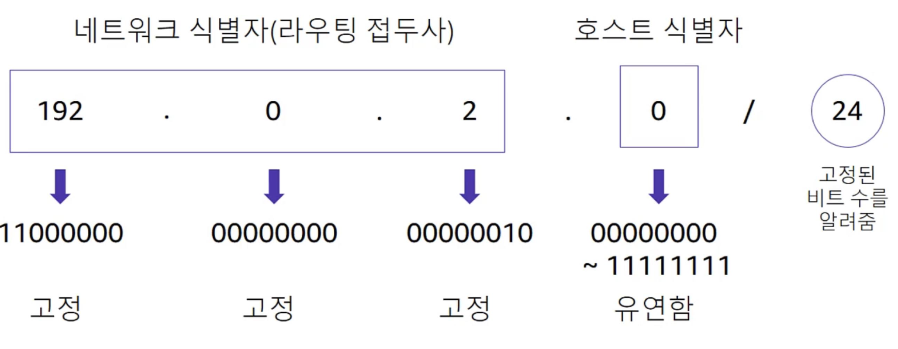

네트워크 기초
- IPv4(32 bit) 주소: 192.0.2.0
- 서브넷 수준에서 public IP 주소 자동 할당 설정을 통해 자동으로 할당
- IPv6(128 bit) 주소: 2600:1f18:22ba:8c00:ba86:a05e:a5ba:00FF
- CIDR(Classless Inter-Domain Routing)
Amazon Virrtual Private Cloud (VPC)
- AWS에서 논리적으로 격리된 네트워크 공간을 할당하여 가상 네트워크에서 AWS 리소스를 이용할 수 있는 서비스 제공
- Private IP
- 동일 네트워크에서 instance 간의 통신에 사용
- Public IP
- EC2 instance 생성 시 옵션으로 public IP 주소 사용 가능 : instance 재부팅 시 다른 public IP가 할당됨
- Elastic IP
- 동적 컴퓨팅을 위해 고안된 고정 public IP
- instance와 연결되지 않거나, 중지된 instance 또는 분리된 네트워크 인터페이스와 연결 시, 요금 발생
- IP 주소 지정
- VPC 생성 시 IPv4 CIDR블록에 VPC 할당
- public subnet
- subnet 네트워크 트래픽이 internet gateway(IG)로 라우팅 되는 subnet
- private subnet
- subnet 네트워크 트래픽이 internet gateway(IG)로 라우팅 되지 않는 subnet

- routing table
- 외부로 나가는 outbound traffic에 대해 허용된 경로를 지정하는 것
- VPC subnet 내에 생성된 packet이 목적지로 이동하기 위해 어떤 경로로 이동되어야 하는지를 알려줌
VCP Networking

- 인터넷 게이트웨이
- Gateway : 한 네트워크(segment)에서 다른 네트워크로 이동하기 위하여 거쳐야하는 지점
- NAT 게이트웨이
- Network Address Translation
- 외부 네트워크에 알려진 것과 다른 IP 주소를 사용하는 내부 네트워크에서 내부 IP를 외부 IP로 변환하는 서비스
CloudFront
What?
- 엣지 로케이션이라고 하는 데이터 센터의 전 세계 네트워크를 통해 콘텐츠 서비스 제공
- 최종 사용자가 위치한 곳에 더욱 가깝게 콘텐츠를 전송할 수 있기 때문에 성능 향상
- 전세계 400개 이상의 엣지 로케이션 : 글로벌 서비스
- AWS 서비스 → CloudFront간 데이터 전송 무료